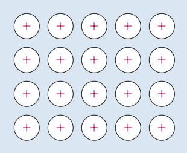

4 Bonding in metals
Elements on the far left of the periodic table combine together in a different way to what you’ve seen so far. They are metals and their bonding is somewhat different.
Two familiar properties of metals make for a good starting point for developing a model of bonding in metals.
- Metals have a strong tendency to form positive ions. Thus, when sodium reacts with water, and when magnesium and aluminium react with acids, hydrogen gas is evolved and the ions Na+, Mg2+ and Al3+, respectively, are formed.
- Metals are good conductors of electricity: when a voltage difference is applied across two points on a piece of metal, there is a movement of electrons between the two points, and an electric current flows.
Let’s consider metallic sodium.
How is a sodium cations formed from a sodium atom?
The Na+ ion is formed by removing the single outer electron from a sodium atom, it has the shell structure of neon.
The key feature of the bonding in sodium and indeed metals in general is the fact that the electrons so removed are no longer tied to individual metal ions, and are allowed to move freely throughout the entire volume of the metallic substance.
The low electronegativities mean that none of the atoms present will readily take on these electrons, either by forming a negative ion, or by accepting a share in electron-pair bonds. Consequently, a pool of free electrons is created which is like hot money: they are passed quickly from hand to hand, and can find no permanent home!
These free electrons, sometimes described as an 'electron gas', are responsible for the ability of metals to conduct electricity. At the same time, they occupy the space between the positive ions, so their negative charge acts like a binding glue pulling the metal sites together. The metallic bond is an attraction between these positive and negative charges.

Now watch the following video which is a modern version of an experiment carried out by the Cornish chemist and inventor Sir Humphrey Davy around 1807. You saw in Session 1 how vigorously the alkali metals such as sodium react with water. However if ammonia gas is cooled below its boiling point, it becomes a very effective liquid solvent. The video shows sodium metal being dissolved in ammonia.
What were your observations when sodium was added to liquid ammonia?
Sodium dissolved to give a blue solution. The blue colour is thought to arise from electrons surrounded by ammonia molecules. On increasing the concentration of sodium a shiny bronze colour was oberved.
OpenLearn - Discovering chemistry
 Except for third party materials and otherwise, this content is made available under a Creative Commons Attribution-NonCommercial-ShareAlike 4.0 Licence, full copyright detail can be found in the acknowledgements section. Please see full copyright statement for details.
Except for third party materials and otherwise, this content is made available under a Creative Commons Attribution-NonCommercial-ShareAlike 4.0 Licence, full copyright detail can be found in the acknowledgements section. Please see full copyright statement for details.